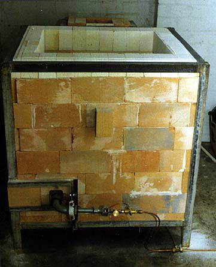

Kiln Materials (Main Body):
Total Bricks:
The frame is made from welded angle iron. You can do the welding yourself if you have access to welding gear or get someone to do it for you. Scrap iron merchants usually have cheap angle iron, which they might be able to cut to size for you.
Main Body
After the frame is finished, the floor is lined with a layer of calcium-silicate sheeting (asbestos substitute), on which a layer of cheap, dense kiln bricks is laid. Then the outer wall construction is commences, laying the bricks on their small side. This means less bricks are needed to build the kiln (and it is not so big for a good interior stacking space), but sufficient wall strength is achieved. Bricks are cut to fit snugly into the frame, leaving an opening of 3 inches height and 6 inches width for the flue. The next layer of bricks are laid over the opening butting up in the middle of the opening. These will be held in place by the bricks on the side and those on top. It should go without saying that edges are always alternated, so that no two edges are ever exactly over each other, rather they should be in the middle of adjoining bricks. This goes for the outer skin as well as the inner skin, with the addition that it is possible to lay the inner wall so that inner joins do not coincide with outer joins. In theory, when the kiln is fired, at no point will you be able to look directly into the interior. This will prevent excess heat from escaping through cracks.

No mortar is used to join the bricks, rather they should be lightly rubbed against each other to achieve a perfect join. They should be packed fairly tightly, with just a little room to move. Spaces between the bricks will grow slightly as they tend to shrink a bit, despite pre-shrinking from the manufacturer. This problem can later be alleviated by filling the cracks with fibre-paper, if you find it necessary at all.
The top row should be laid in the fashion of a header row, i.e. these bricks will be laid on their larger side, pointing in and cut to size (see photo). This gives a clean finish and helps to hold the walls in place. Again, these bricks are cut snugly and should just slide into place under the angle iron.
During construction space should be left for a port hole, of about 3 x 3 inches. A plug can be cut to fit from a brick. Similarly, two burner port holes need to be cut on opposite sides of the kiln, also 3 x 3 inches. This method of placing the burners (two) has proven the most efficient, with the heat being able to swirl around and distribute itself more evenly. The kiln oxidizes and reduces very well although there is an area of oxidation on the lower shelf - every kiln has it's quirks. This kiln is fired with LPG from bottles and is quite efficient. It has an internal stacking space of about 8 sq. ft. and can be modified to be larger or smaller. It fires to 1300 in about 7-8 hours, less if you are game - I have not tried it, not wanting to crack my porcelain, which I fire successfully in this kiln. (Bag walls protect the ware from direct flame). I usually bisque in about 4 hours.
Costs
This kiln can cost very little to build. Partly buying second hand materials (which had not always been used), it cost me about US$ 650, with an additional US$150-200 for kiln shelves, props and burners, etc.
Next week: More on flue construction; more on burner ports; hey what about a lid?